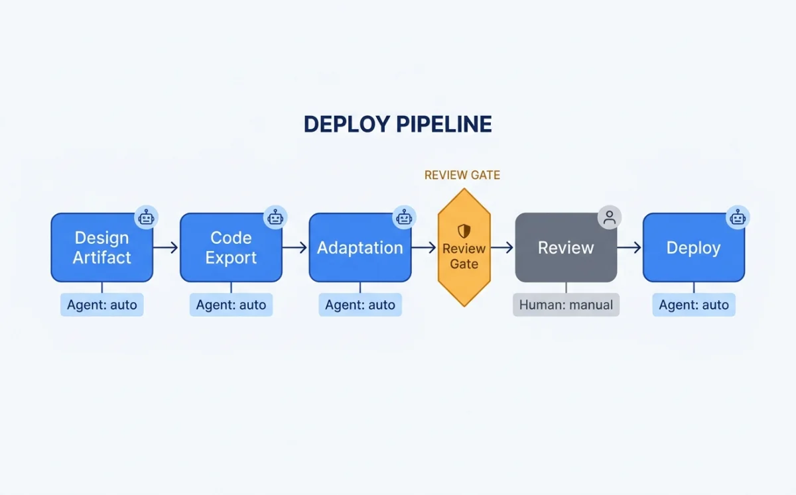
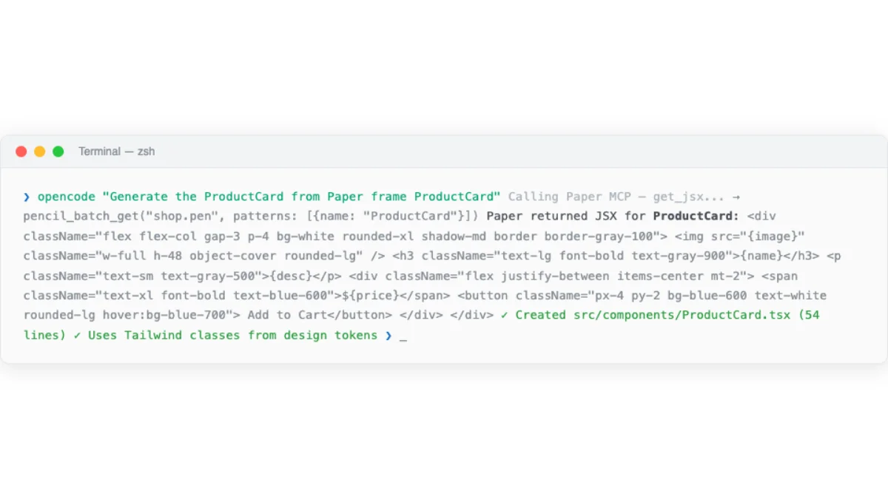
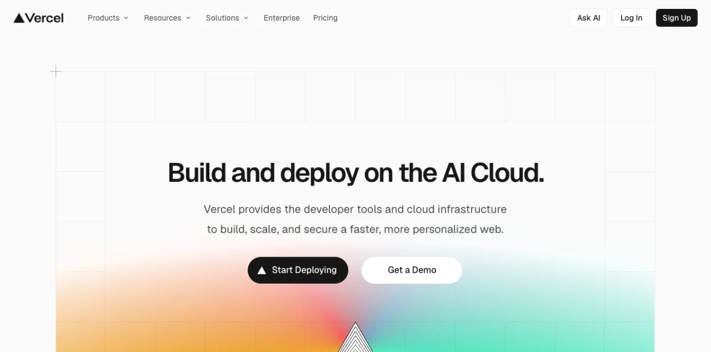
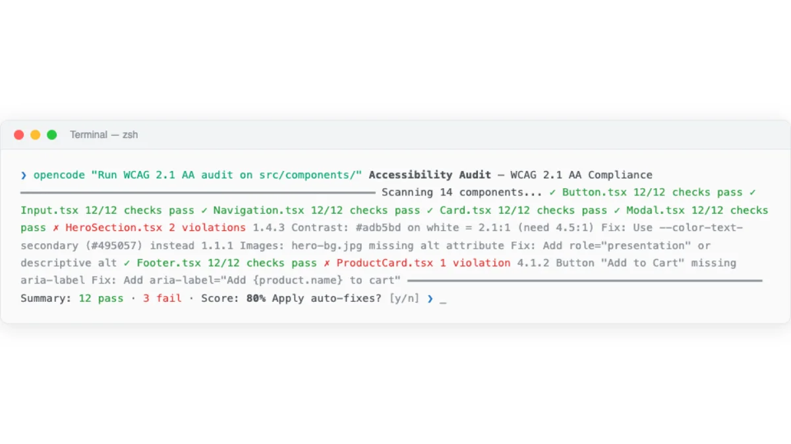
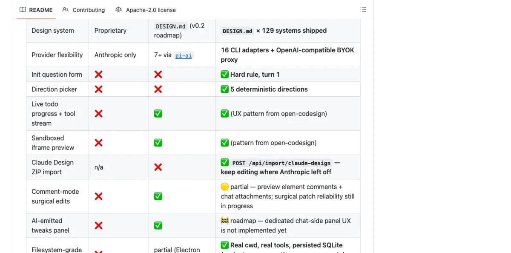

The Full Pipeline: Design Artifact to Production Code
The pipeline from design to production code has five stages. Each stage can be handled by an agent, a human, or a combination of both.

Canvas artifact in Paper, Pencil, or OpenPencil
JSX, HTML, or framework-specific code
Responsive, accessible, performant
Human validates visual output
Commit, deploy, monitor
The key insight: stages two and three are where agents add the most value. Exporting code from a design is mechanical. Adding responsive breakpoints is mechanical. Adding accessibility attributes is mechanical. Performance optimization is mostly mechanical. The agent handles these while the human focuses on whether the design looks right, feels right, and solves the right problem.
The pipeline differs depending on which tool produced the design. Paper exports JSX directly because Paper is HTML/CSS natively. Pencil generates React+Tailwind from its .pen file format. OpenPencil has the widest export surface: React+Tailwind, HTML+CSS, Vue, Svelte, Flutter, SwiftUI, Jetpack Compose, and React Native. Chapter 06 covers OpenPencil in depth.
Code Export from Paper: JSX and Tailwind
Paper's get_jsx MCP tool is the foundation of the export pipeline. It takes a node ID and a format parameter (tailwind or inline-styles) and returns JSX as a string. The output is production-quality because Paper's canvas is real HTML/CSS --- there is no translation layer and no approximation.

# Paper MCP: Export JSX from a selected frame
# Agent prompt: "Read the hero section I have selected in Paper
# and build it with React + Tailwind"
# MCP tool call:
get_jsx({
nodeId: "selected-frame-id",
format: "tailwind"
})
# Returns: JSX string with Tailwind classes
# <section className="flex flex-col items-center px-6 py-12
# bg-gradient-to-b from-slate-900 to-slate-800">
# <h1 className="text-4xl font-bold text-white">
# Build faster with agents
# </h1>
# ...
# </section>The best results come when the design uses flex layouts and container elements. Paper's flex-based layout translates directly to Tailwind flex classes. Designs using absolute positioning require more agent intervention to convert to responsive layouts.
The standard workflow from Paper's documentation: select the frame you want to build, prompt the agent with "Build a website in this folder using the hero section I have selected in Paper. Use React and Tailwind for the styling." The agent asks for permission to call Paper MCP tools (read-only, safe to always allow). Visual feedback appears in Paper while the agent examines the frame. After examining, the agent scaffolds the project and starts the dev server.
The agent can also pull computed styles for verification. The get_computed_styles tool returns exact CSS values for one or more nodes in batch. This is useful for verifying that the generated code matches the design.
# Verify generated code matches the design
# MCP tool call:
get_computed_styles({
nodeIds: ["hero-frame-id", "cta-button-id"]
})
# Returns: computed CSS for each node
# Agent compares returned styles against generated JSX
# Identifies mismatches and fixes themCode Generation from Pencil and OpenPencil
Pencil's design-to-code pipeline reads .pen files and generates React+Tailwind components via its CLI. The .pen file format is JSON-based (covered in Chapter 04), which makes it diffable and versionable. Design variables in .pen files map directly to CSS custom properties.
# Pencil: Generate React components from .pen file
$ pencil export --format react-tailwind --input design.pen --output src/
# Generates:
# src/
# components/
# Hero.tsx
# FeatureGrid.tsx
# Footer.tsx
# tokens/
# colors.css
# spacing.css
# typography.cssPencil supports components with slots and overrides. These translate to React component props. A button component with a text slot and a variant override becomes a React component with text and variant props. The mapping is direct because Pencil's component model was designed with code export in mind.
OpenPencil uses an incremental codegen pipeline that gives the agent control over each stage. This is more flexible than Pencil's batch export.
# OpenPencil: Incremental codegen pipeline via MCP
# Step 1: Plan the code generation
codegen_plan({
pageId: "landing-page",
targetFramework: "react-tailwind"
})
# Returns: chunk plan with section assignments
# Step 2: Submit code chunks incrementally
codegen_submit_chunk({
chunk: "hero-section",
code: "<section className='hero'>...</section>"
})
codegen_submit_chunk({
chunk: "features-grid",
code: "<section className='features'>...</section>"
})
# Step 3: Assemble into project structure
codegen_assemble({
outputPath: "src/components/"
})
# Step 4: Clean temporary files
codegen_clean({ removeTempFiles: true })OpenPencil's design variables generate CSS custom properties using the var(--name) pattern. This reduces CSS duplication and makes the design tokens maintainable in code.
# OpenPencil: Design variables → CSS custom properties
# .op file defines variables:
# {
# "variables": {
# "brand-primary": "#3B82F6",
# "spacing-unit": "8px",
# "font-heading": "Inter"
# }
# }
# Generated CSS:
:root {
--brand-primary: #3B82F6;
--spacing-unit: 8px;
--font-heading: "Inter", sans-serif;
}
.hero-title {
color: var(--brand-primary);
font-family: var(--font-heading);
margin-bottom: calc(var(--spacing-unit) * 4);
}OpenPencil's codegen supports multiple frameworks through its pen-codegen package. Each framework has a dedicated generator: React, HTML, Vue, Flutter, SwiftUI, Jetpack Compose, and React Native. The generator handles framework-specific patterns --- JSX for React, SwiftUI's declarative syntax, Compose's composable functions.
| Tool | Export Formats | Variable Mapping | Component Support | Incremental Gen |
|---|---|---|---|---|
| Paper | JSX (Tailwind or inline) | Computed CSS → Tailwind classes | HTML elements only | No (single export) |
| Pencil | React+Tailwind | .pen variables → CSS custom properties | Slots → React props | No (CLI batch export) |
| OpenPencil | React, Vue, Svelte, Flutter, SwiftUI, Compose, RN | .op variables → CSS custom properties | Slots → framework-specific props | Yes (plan → submit → assemble) |
Responsive Breakpoints and Layout Translation
Responsive design is where agent-driven workflows save the most time. Translating a desktop design to mobile, tablet, and wide-screen variants is tedious, mechanical work. Agents excel at it.

Paper's approach is elegant. You create multiple frames in Paper, each sized to a breakpoint: 375px for mobile, 768px for tablet, 1440px for desktop. Then you prompt: "Add responsive breakpoints based on the frames I have selected. Each frame is a different breakpoint."
# Paper: Responsive breakpoint workflow
# Step 1: Create frames at each breakpoint size
# Frame 1: 375×812 (mobile)
# Frame 2: 768×1024 (tablet)
# Frame 3: 1440×900 (desktop)
# Step 2: Select all three frames
# Step 3: Agent prompt:
"Add responsive breakpoints to the website based on
the frames I have selected in Paper. Each frame
represents a different breakpoint."
# Agent reads each frame via get_jsx:
get_jsx({ nodeId: "mobile-frame", format: "tailwind" })
get_jsx({ nodeId: "tablet-frame", format: "tailwind" })
get_jsx({ nodeId: "desktop-frame", format: "tailwind" })
# Agent generates responsive Tailwind classes:
# <div className="grid grid-cols-1 md:grid-cols-2
# lg:grid-cols-3 gap-4 md:gap-6 lg:gap-8">
# ...
# </div>Paper uses real CSS flexbox in its canvas. This means the agent can understand the layout structure natively. It reads flex direction, gap, padding, justify-content, and align-items from the design and maps them to Tailwind classes. No guesswork about layout intent.
For designs without multiple breakpoint frames, the agent infers responsive behavior from a single desktop frame. This is less precise but still effective. The agent applies standard responsive patterns: stack columns vertically on mobile, reduce font sizes, hide secondary content, adjust spacing.
# Agent: Responsive inference from single desktop frame
# Agent prompt: "Make the hero section responsive for
# mobile (375px), tablet (768px), and desktop (1440px)"
# Agent output:
# Desktop: <h1 className="text-5xl">
# Tablet: <h1 className="md:text-4xl">
# Mobile: <h1 className="text-3xl">
# Desktop: <div className="grid grid-cols-3 gap-8">
# Tablet: <div className="md:grid-cols-2">
# Mobile: <div className="grid-cols-1">Accessibility: Agents as A11y Enforcers
Accessibility is the area where agent-driven code generation has the biggest quality advantage over manual implementation. Agents do not skip alt text. Agents do not forget form labels. Agents do not overlook keyboard navigation. Every accessibility attribute is applied consistently, every time.

Paper's HTML-native canvas gives agents a head start. Paper designs already use semantic HTML elements: <nav>, <main>, <section>, <button>. These elements flow naturally into the generated JSX. The agent does not need to convert <div> spaghetti into semantic HTML because Paper never produces <div> spaghetti.
The agent accessibility audit follows a standard pattern.
# Agent accessibility audit prompt pattern
"Generate the JSX from the selected frame in Paper.
Then run an accessibility audit:
1. All images must have alt text
2. All form inputs must have labels
3. Color contrast ratio >= 4.5:1 for body text
4. Interactive elements must be keyboard accessible
5. Use semantic HTML elements (nav, main, section, article)
Fix any issues you find before showing me the code."
# Agent workflow:
# 1. get_jsx() → raw JSX from Paper
# 2. Audit JSX for a11y issues
# 3. Add missing alt attributes
# 4. Add aria-labels where needed
# 5. Verify contrast ratios via get_computed_styles()
# 6. Add keyboard handlers (onKeyDown, tabIndex)
# 7. Present audited JSX to userThe agent can verify color contrast ratios using get_computed_styles. It reads the foreground and background colors, calculates the contrast ratio, and flags values below 4.5:1 for body text or 3:1 for large text. This is a mechanical check that is easy to automate and hard to do consistently by hand.
For more thorough audits, the agent can run axe-core or similar tools against the generated code as a verification step. The pattern is: agent generates code, agent runs accessibility audit, agent auto-fixes issues, human reviews the final output.
My take: Agents as a11y enforcers is one of the highest-value applications of agentic design. Accessibility is always the first thing cut when deadlines loom. An agent that applies every aria attribute, checks every contrast ratio, and ensures keyboard navigation works is worth the token cost. I would rather have an agent-generated accessibility audit than a manual audit that was rushed or skipped.
Performance Optimization in the Agent Loop
Performance optimization is another area where agents handle mechanical work well. The agent generates the initial code, then optimizes it as a post-processing step.
Paper's export tool supports format and scale overrides. The agent can generate responsive image sets with proper srcset attributes directly from the canvas.
# Paper: Optimized asset export via MCP
export({
nodeId: "hero-image",
format: "png",
scales: [1, 2]
})
# Returns: hero-image-1x.png, hero-image-2x.png
# Agent generates responsive img tag:
# <img
# srcset="hero-image-1x.png 1x, hero-image-2x.png 2x"
# src="hero-image-1x.png"
# alt="Product dashboard showing analytics"
# loading="eager"
# />Paper's real CSS (no abstraction layer) means there is no design-to-code translation bloat. The generated code is as performant as the design. OpenPencil's design variables mapped to CSS custom properties reduce CSS duplication. Agents can lazy-load below-fold sections, optimize font loading, and minify CSS as post-processing steps.
The agent can also target specific Core Web Vitals metrics. A prompt like "Optimize for LCP under 2.5s and CLS under 0.1" gives the agent concrete targets to work toward. The agent measures, optimizes, and re-measures until the targets are met.
| Optimization | Agent Capability | Human Review Needed |
|---|---|---|
| Responsive images (srcset) | Fully automated via Paper export tool | Visual check only |
| Font loading optimization | Agent adds font-display: swap, preloads critical fonts | Verify render behavior |
| Lazy loading below fold | Agent adds loading="eager" to below-fold images and sections | Verify no layout shift |
| CSS deduplication | Agent merges duplicate styles, uses CSS custom properties | Visual regression check |
| Core Web Vitals targeting | Agent measures, optimizes, re-measures against targets | Final metrics review |
The Review-and-Iterate Loop
The pipeline is not one-shot. It is a loop: generate, review, iterate. The agent produces code. The human reviews the output in a browser. The human gives feedback. The agent adjusts. Repeat until the output meets the design intent.

Paper's documentation recommends git checkpoints during this loop. "Can you add git to this folder and commit the changes made so far?" This creates a rollback point before each iteration. If the agent's changes make things worse, you can revert cleanly.
# Review-and-iterate loop workflow
# Iteration 1: Generate hero section
"Build the hero section from my Paper selection using React + Tailwind"
# Agent: get_jsx() → scaffold → commit
$ git add . && git commit -m "hero: initial generation from Paper design"
# Human reviews in browser, finds issues:
"The CTA button is too small and the heading font weight is wrong"
# Iteration 2: Agent fixes based on feedback
Agent adjusts button size, fixes heading weight
$ git add . && git commit -m "hero: fix CTA size and heading weight"
# Human approves hero, moves to next section
"Build the features grid from the next frame in Paper"
# Iteration 3: Agent generates features grid
Agent reads next frame, generates responsive grid
$ git add . && git commit -m "features: grid from Paper design"
# Signal completion of section
finish_working_on_nodes({ nodeIds: ["hero-frame", "features-frame"] })The finish_working_on_nodes tool clears the visual working indicator from artboards in Paper. This signals to the human that the agent has finished working on those elements. It is a small but important UX detail in the agent-human collaboration.
The bi-directional workflow is where Paper's connected canvas shines. You can pull from the codebase to the canvas, iterate visually, and push back. The agent becomes an extension of your hands for the mechanical parts, while you handle the parts that require human judgment: "Does this look right? Does this feel right? Does this solve the right problem?"
This pattern --- agent generates, human reviews, agent iterates --- is the same one used by Huashu Design's Junior Designer Workflow (Chapter 07) and Open Design's interactive preview. The common thread: agents are good at generating and iterating. Humans are good at evaluating and directing. The loop combines both strengths.
My take: The review-and-iterate loop is where agentic design delivers real value. The agent handles the tedious parts --- responsive variants, token mapping, accessibility attributes, performance optimization. The human handles the creative parts --- does this look right, does this match the brand, does this solve the user's problem. This division of labor works because it plays to the strengths of both parties.
Next: The tools and patterns covered in this book are not theoretical. Chapter 13 presents four detailed case studies of agentic design workflows used by real teams, with honest assessments of what worked, what did not, and how long each workflow took from start to finish.